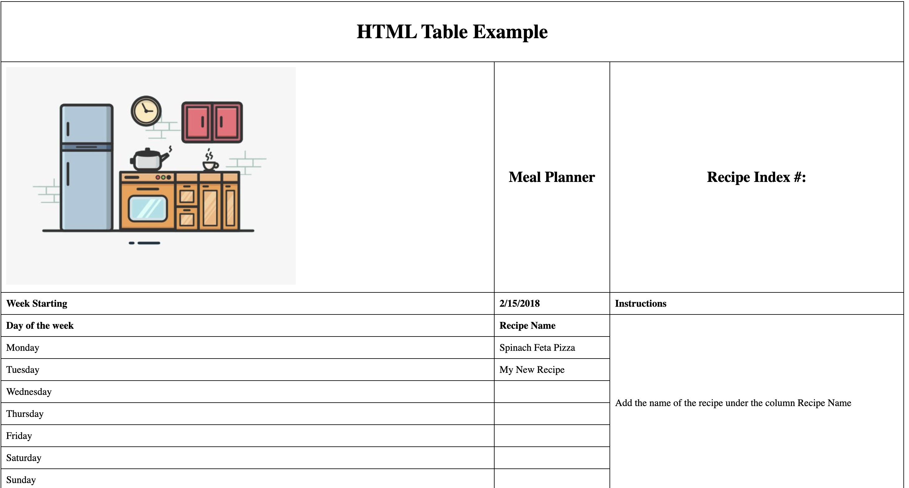
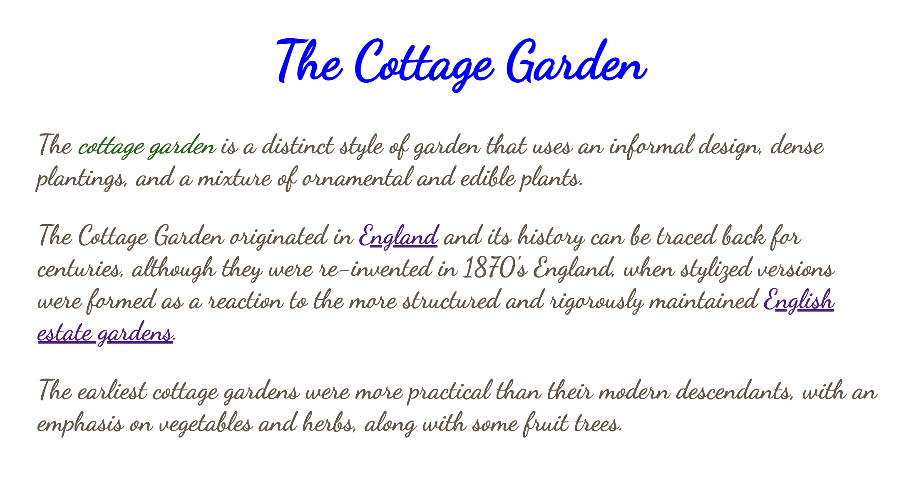
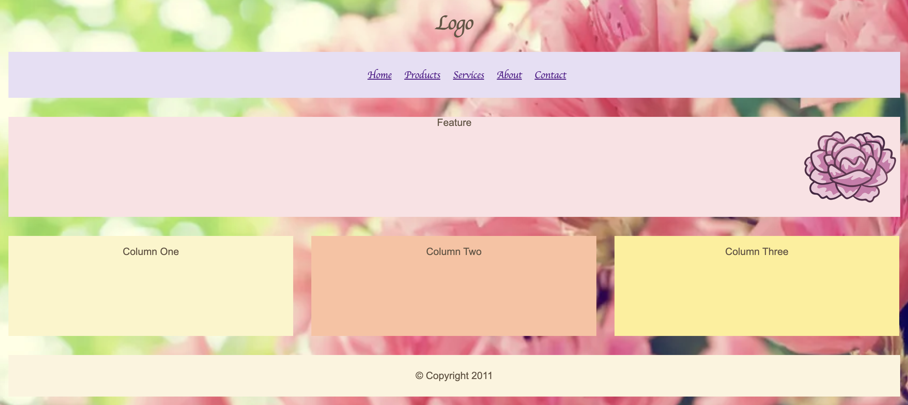
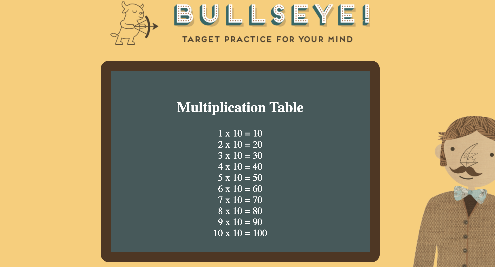

Module 01 was to create a cooking recipe page with a picture, using only a ref's, h1's, and h2's.
Here is a small screenshot of what it looks like.

Module 02 was to create a table using th, b, and more tags to create a cooking planner.
Here is a small screenshot of what it looks like.
In Module 03 it was our first time creating a css file and connecting it to the html file, within this module we changed the font, italicized, and changed the color of certain words.
Here is a small screenshot of what it looks like.
Within Module 04, we created a menu page with a background picture while changing the colors of each box.
Here is a small screenshot of what it looks like.
Finally, for the last module we had to create a multiplication table using javascript.
Here is a small screenshot of what it looks like.
